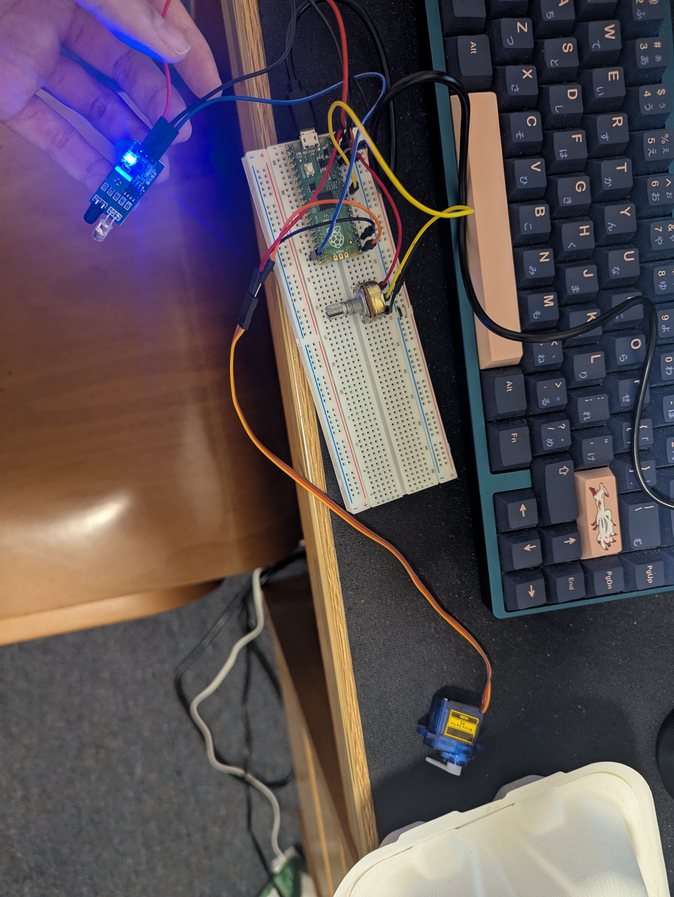
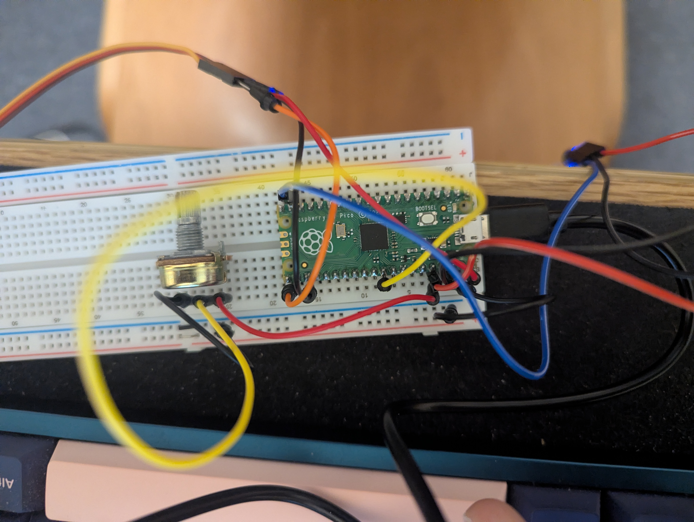
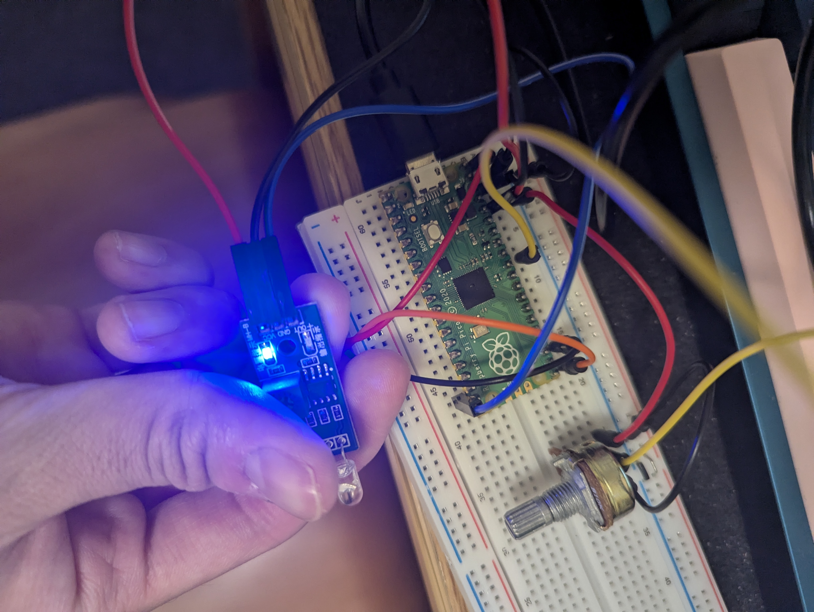
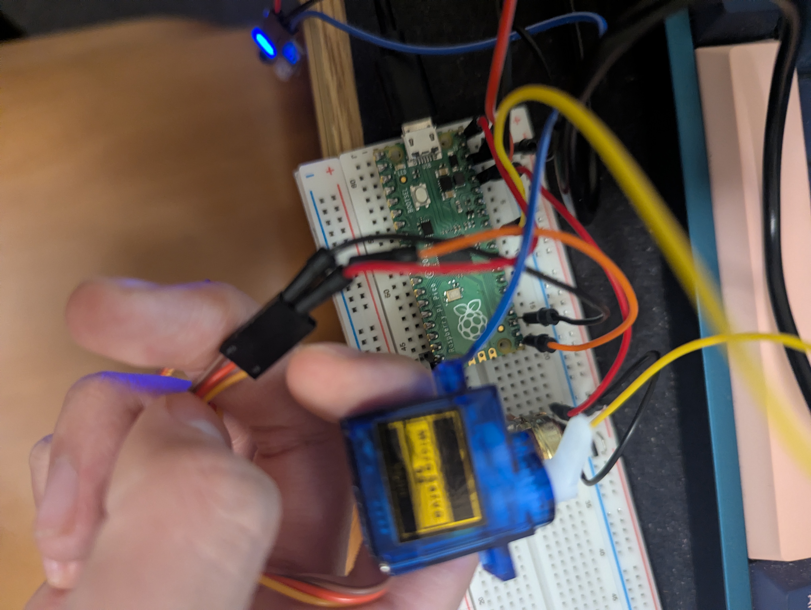
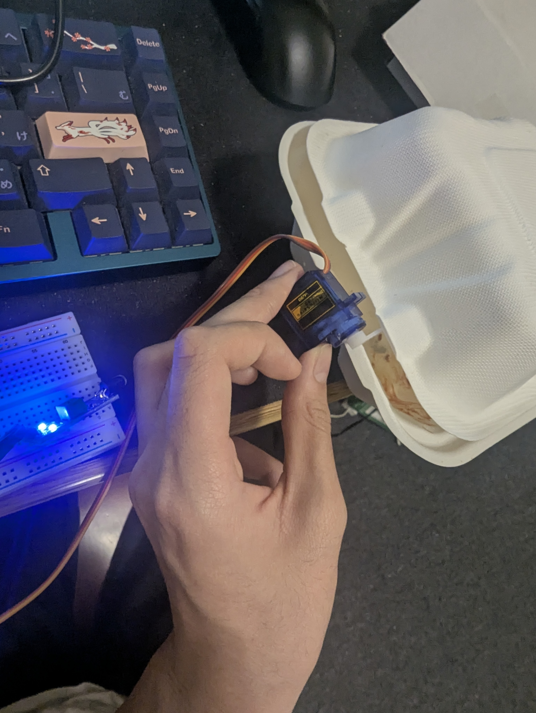
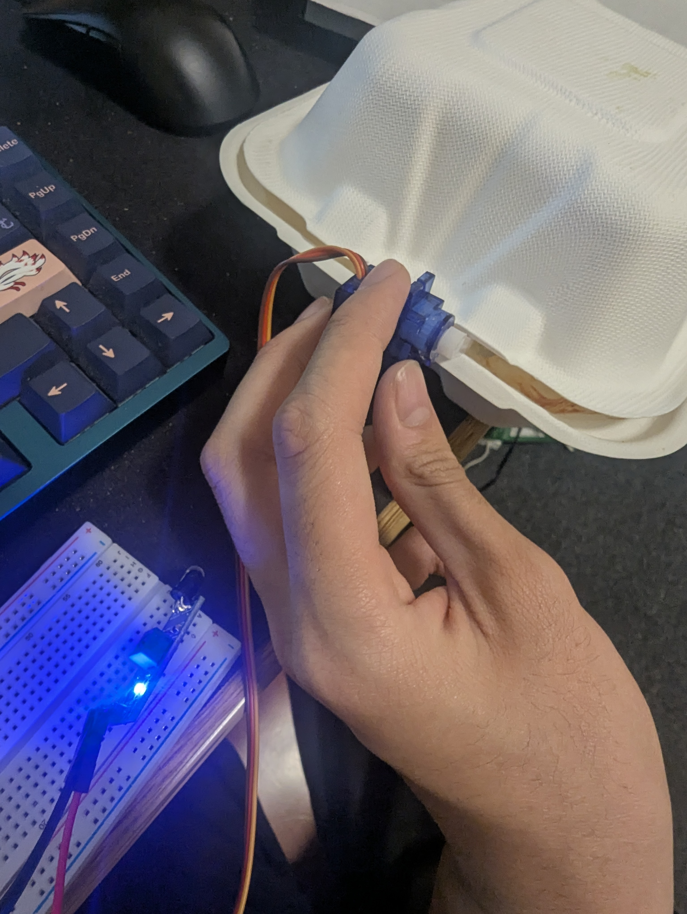

Pico03 Automatic Lid Opener
A contactless container lid opener driven by a Raspberry Pi Pico, an infrared obstacle sensor, an adjustable rotary potentiometer, and an SG90 micro servo.
Demonstration
Triggering the IR sensor lifts the lid to the angle set by the potentiometer, holds for 3 seconds, and returns to rest.
System Overview
The Pico03 Automatic Lid Opener automates opening a hinged clamshell container without physical contact. Placing a hand in front of the infrared obstacle avoidance module pulls GP14 low, signaling the Raspberry Pi Pico to rotate the SG90 servo arm against the lid seam.
A rotary potentiometer connected to ADC pin GP26 scales a 16-bit analog reading across 0°–180° so the maximum opening angle can be adjusted on the fly. Once the sensor clears, the 0.1-second polling loop counts 3 seconds of unobstructed time before returning the servo to its 65° closed resting angle.
Build & Hardware Gallery






Source Code
from machine import Pin, ADC, PWM
import time
ObstacleAvoidPin = 14
ObstacleAvoid = Pin(ObstacleAvoidPin, Pin.IN)
PotentiometerPin = 26
Potentiometer = ADC(Pin(PotentiometerPin))
SERVO_PIN = 16
servo = PWM(Pin(SERVO_PIN))
servo.freq(50)
def set_servo_angle(angle):
angle = max(0, min(180, angle))
duty = int(1638 + angle * (8192 - 1638) / 180)
servo.duty_u16(duty)
closeAngle = 65
set_servo_angle(closeAngle)
scaleFactor = 180/65535
handAwayDuration = 0
while True:
PotentiometerValue = Potentiometer.read_u16() # Returns 0 to 65535
print(str(PotentiometerValue))
print(str(PotentiometerValue * scaleFactor))
ObstacleAvoidValue = ObstacleAvoid.value() #1 if clear, 0 if obstacle
if ObstacleAvoidValue == 0:
print("Obstacle")
handAwayDuration = 0
set_servo_angle(PotentiometerValue * scaleFactor)
else:
print("No obstacle")
handAwayDuration += 0.1
if handAwayDuration > 3: #after 3 seconds of being away from the sensor, the servo
set_servo_angle(closeAngle)
time.sleep(0.1)